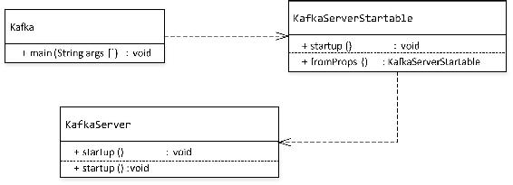
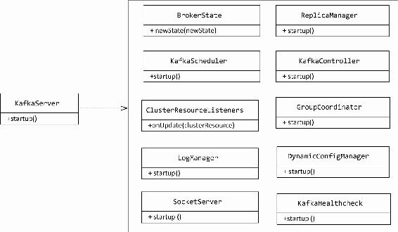
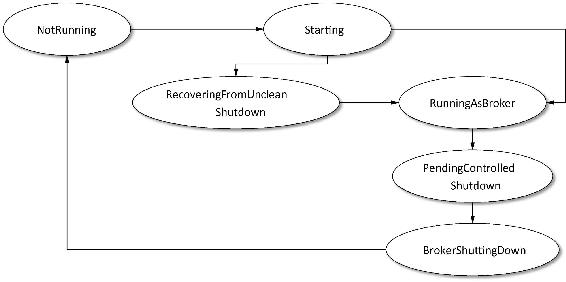
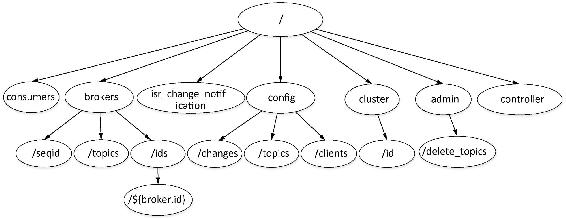

Kafka自带了一个启动KafkaServer的脚本kafka-server-start.sh。该脚本调用kafka.Kafka类，脚本代码如下：
exec $base_dir/kafka-run-class.sh $EXTRA_ARGS kafka.Kafka "$@"即KafkaServer启动的入口是kafka.Kafka.scala。KafkaServer启动时主要组件的调用关系如图4-1所示。

图4-1 KafkaServer启动的类图
由图4-1可知，KafkaServer启动的工作是由KafkaServer.startup()来完成的，在Kafka.startup()方法中会完成相应组件的初始化并启动这些组件。这些组件主要包括任务调度器（KafkaScheduler）、日志管理器（LogManager）、网络通信服务器（SockeServer）、副本管理器（ReplicaManager）、控制器（KafkaController）、组协调器（GroupCoordinator）、动态配置管理器（DynamicConfigManager）以及Kafka健康状态检测（KafkaHealthcheck）等。KafkaServer. startup()所依赖的组件如图4-2所示。

图4-2 KafkaServer启动所依赖的组件的类图
KafkaServer在实例化时会在$log.dir指定的每个目录下创建一个meta.properties文件，该文件记录了与当前Kafka版本对应的一个版本version字段，当前版本的Kafka设置version为固定值0，还有一个记录当前代理的broker.id的字段。因此，当我们在不改变代理对应的log.dir配置而想修改代理的brokerId时，需要修改两处的配置。
（1）修改代理对应的server.properties文件的broker.id的值。
（2）修改log.dir目录下meta.properties文件的broker.id值。若log.dir配置了多个目录，则要分别修改各目录下的meta.properties文件的broker.id值。
KafkaServer实例化成功后，调用startup()方法来完成KafkaServer启动操作，具体过程如下。
（1）首先实例化用于限流的QuotaManagers，这些Quota会在后续其他组件实例化时作为入参注入当中，接着设置代理状态为Starting，即开始启动代理。代理状态机提供了6种状态，如表4-1所示。
表4-1 代理状态说明
|
状 态 名 |
状态值（单位字节） |
描 述 |
|---|---|---|
|
NotRunning |
0 |
代理未启动 |
|
Starting |
1 |
代理正在启动中 |
|
RecoveringFromUncleanShutdown |
2 |
代理非正常关闭，在${log.dir}配置的每个路径下存在.kafka_cleanshutdown文件 |
|
RunningAsBroker |
3 |
代理已正常启动 |
|
PendingControlledShutdown |
6 |
KafkaController被关闭 |
|
BrokerShuttingDown |
7 |
代理正在准备关闭 |
BrokerStates提供了newState()方法来设置代理的状态变迁。代理合法的状态转换如图4-3所示。

图4-3 代理状态机状态转换图
（2）启动任务调度器（KafkaScheduler），KafkaScheduler是基于Java.util.concurrent. ScheduledThreadPoolExecutor来实现的，在KafkaServer启动时会构造一个线程总数为${background.threads}的线程池，该配置项默认值为10，每个线程的线程名以“kafka-scheduler-”为前缀，后面连接递增的序列号，这些线程作为守护线程在KafkaServer启动时开始运行，负责副本管理及日志管理调度等。
（3）创建与ZooKeeper的连接，检查并在ZooKeeper中创建存储元数据的目录节点，若目录不存在则创建相应目录。KafkaServer启动时在ZooKeeper中要保证如图4-4所示文件目录树被成功创建。
Kafka在ZooKeeper中创建的各节点说明如表4-2所示。

图4-4 KafkaServer启动时在ZooKeeper中创建的节点
表4-2 Kafka在ZooKeeper中注册节点说明
|
节 点 |
说 明 |
|---|---|
|
/consumers |
旧版消费者启动后会在ZooKeeper的该节点路径下创建一个消费组的节点。将在消费者启动流程中进行介绍 |
|
/brokers/seqid |
辅助生成代理的id，当用户没有配置broker.id时，ZooKeeper会自动生成一个全局唯一的id，每次自动生成时会从该路由读取当前代理的id最大值，然后加1 |
|
/brokers/topics |
每创建一个主题时就会在该目录下创建一个与主题同名的节点 |
|
/brokers/ids |
当Kafka每启动一个KafkaServer时会在该目录下创建一个名为${broker.id}的子节点 |
|
/config/topics |
存储动态修改主题级别的配置信息 |
|
/config/clients |
存储动态修改客户端级别的配置信息 |
|
/config/changes |
动态修改配置时存储相应的信息，在5.5节会做介绍 |
|
/admin/delete_topics |
在对主题进行删除操作时保存待删除主题的信息 |
|
/cluster/id |
保存集群id信息 |
|
/controller |
保存控制器对应的brokerId信息等 |
|
/isr_change_notification |
保存Kafka副本ISR列表发生变化时通知的相应路径 |
（4）通过UUID.randomUUID()生成一个uuid值，然后经过base64处理得到的值作为Cluster的id，调用Kafka实现的org.apache.kafka.common.ClusterResourceListener通知集群元数据信息发生变更操作。此时生成的Cluster的id信息会写入ZooKeeper的/cluster/id节点中，在ZooKeeper客户端通过get命令可以查看该Cluster的id信息。
（5）实例化并启动日志管理器（LogManager）。LogManager负责日志的创建、读写、检索、清理等操作。
（6）实例化并启动SocketServer服务。SocketServer启动过程在3.4节已有详细介绍，这里不再赘述。
（7）实例化并启动副本管理器（ReplicaManager）。副本管理器负责管理分区副本，它依赖于任务调度器与日志管理器，处理副本消息的添加与读取的操作以及副本数据同步等操作。
（8）实例化并启动控制器。每个代理对应一个KafkaController实例，KafkaController在实例化时会同时实例化分区状态机、副本状态机和控制器选举器ZooKeeperLeaderElector，实例化4种用于分区选举Leader的PartitionLeaderSelector对象。在KafkaController启动后，会从KafkaController中选出一个节点作为Leader控制器。Leader控制器主要负责分区和副本状态的管理、分区重分配、当新创建主题时调用相关方法创建分区等。
（9）实例化并启动组协调器GroupCoordinator。Kafka会从代理中选出一个组协调器，对消费者进行管理，当消费者或者订阅的分区主题发生变化时进行平衡操作。
（10）实例权限认证组件以及Handler线程池（KafkaRequestHandlerPool）。在KafkaRequest HandlerPool中主要是创建${ num.io.threads }个KafkaRequestHandler，Handler循环从Request Channel中取出Request并交给kafka.server.KafkaApis来处理具体的业务逻辑。在实例化KafkaRequestHandlerPool之前先要实例化KafkaApis，Kafka将所有请求的requestId封装成一个枚举类ApiKeys。当前版本的Kafka支持21种类型的请求。
（11）实例化动态配置管理器。注册监听ZooKeeper的/config路径下各子节点信息变化。
（12）实例化并启动Kafka健康状态检查（KafkaHealthcheck）。Kafka健康检查机制主要是在ZooKeeper的/brokers/ids路径下创建一个与当前代理的id同名的节点，该节点也是一个临时节点。当代理离线时，该节点会被删除，其他代理或者消费者通过判断/brokers/ids路径下是否有某个代理的brokerId来确定该代理的健康状态。
（13）向meta.properties文件中写入当前代理的id以及固定版本号为0的version信息。
（14）注册Kafka的metrics信息，在KafkaServer启动时将一些动态的JMX Beans进行注册，以便于对Kafka进行跟踪监控。
最后将当前代理的状态设置为RunningAsBroker，表示当前KafkaServer已正常启动完成，KafkaServer启动成功后通过jps命令可看到一个名为kafka的进程。